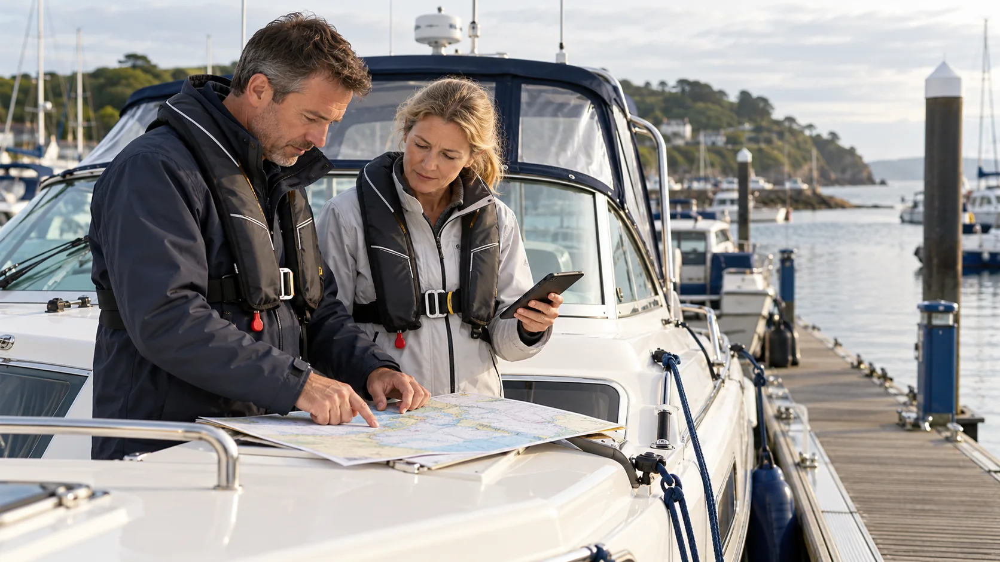

Bridge Watchkeeping
Eight stages covering COLREGs, recognition, collision avoidance, buoyage, traffic separation and AIS.
Scenario briefing, guided watch, simulator and debrief.
A complete, structured Project Watch guide to all 41 COLREG rules. Learn the principles, understand the detail and move directly into the practical training tools.
Select a COLREG section below or view the complete rule map.
The Rules tell you what to do; the Annexes provide the technical detail behind lights, shapes, fishing signals, sound appliances and distress signals.

Technical positioning, spacing, colour, intensity and screening requirements.

Additional signals for fishing vessels working close to one another.
Technical characteristics and installation of sound-signal appliances.

Internationally recognised distress signals and alerts.
MASTER VISUAL STANDARD: The Lights & Shapes reference now uses Approved Master Library 03 throughout. Night recognition is lights-only on black; day recognition uses high-contrast black shapes on a light field. The complete verified set covers Rules 21–31 plus the relevant Annex I / II displays, including towing and pushing, fishing, NUC/RAM, constrained by draught, pilot, anchor/aground, dredging and underwater operations, diving and mine-clearance.
Filter by Rule or vessel family. These are the same approved recognition graphics used by the Stage 3 teaching and assessment system.
The interactive trainer now uses the same Approved Master Library 03 visual language as the reference cards above: lights only on black at night, black day shapes on a clean light field, with aspect used only to determine which prescribed navigation lights are visible.
This is the approved Project Watch visual source of truth. Stage 3 teaching and its recognition check draw directly from these same cards.
Lights at night and black shapes by day tell you what a vessel is, what it is doing and whether its ability to manoeuvre may be limited. This course teaches the recognition system using the locked Master Library 03 cards before you use the full bridge trainer.
This is the final part of Stage 3, not another lesson. Complete all six teaching lessons first, then answer 10 recognition questions based only on what Project Watch has just taught. You need 8/10 to complete Stage 3.
Original Project Watch assessment built around the exact vessel displays taught by this platform. It tests night-light recognition, viewing aspect, day shapes and the underlying Rule 20–31 knowledge. No RYA examination material is reproduced.
Learn the signal, hear the real timing pattern, recognise it without a visual clue, then prove it in the 10-question final check. Every teaching card and exam question is backed by the Master Sound Library.
One source of truth for Stage 4 teaching, playback and assessment. Tap PLAY to hear the approved training timing.
Short = about 1 second. Prolonged = 4–6 seconds; Project Watch uses 4.5 seconds.
Large ship profile • deep marine-whistle training tone.
About 1 second.
4.5 seconds in this trainer.
Danger / doubt.
About 5 seconds.
About 5 seconds.
Rule 36 allows attention signals that cannot be mistaken for an authorised signal. Rule 37 points to Annex IV distress signals.
A simulated chartplotter workspace for understanding AIS targets, vessel information, course and heading, speed, closest approach, time to closest approach, dangerous-target warnings and lost/stale data. All vessels and positions are fictional.
Learn what AIS can tell you, what it cannot tell you, and how to use the electronic picture without allowing it to replace lookout, radar or COLREG judgement.
Position, speed over ground, course over ground and—in equipment that supplies it—heading. Class A reports also include navigational status and rate of turn.
Vessel name, call sign, dimensions and type are static data. Class A voyage fields can include draught, destination and ETA, so do not assume every manually entered value is current.
COG is the direction the vessel is moving over the ground. Heading is where the bow points. Tide, current or leeway can make them differ.
CPA and TCPA are calculated predictions based on the present motion of both vessels. They support collision assessment; they do not replace COLREG judgement or lookout.
Class B normally transmits a reduced information set compared with Class A and may update less frequently. Missing voyage fields on a Class B target are not automatically a fault.
If transmissions stop, the displayed position can become stale. Treat a lost AIS target as an information warning—not proof that the vessel disappeared.
Training vessel: Watch One • 14.2 m • power-driven. This beginner module is written for recreational vessels under 20 m. Rule 10(j) therefore applies throughout: do not impede the safe passage of a power-driven vessel following a traffic lane. Learn the geometry first, then apply it under traffic pressure. The locked collision engine remains untouched.
The vessel's heading is as nearly as practicable at right angles to traffic flow. Tide may visibly skew the track/course over ground.
A deliberately diagonal heading makes the crossing intention less clear and does not satisfy the right-angle-heading requirement merely because the vessel eventually reaches the other side.
When joining or leaving a lane from the side, do so at as small an angle to the general direction of traffic flow as practicable. This is different from crossing, where the heading should be as nearly as practicable at right angles to traffic flow.
Compare the geometry visually. Green ticks identify correct Rule 10 geometry; red crosses identify deliberately incorrect training examples.
Training vessel: Watch One, 14.2 m. Assess the traffic first and do not impede a power-driven vessel following a lane. When a safe crossing develops, cross the complete scheme on the Rule 10(c) heading while continuing to apply the other COLREGs. This simulator remains separate from the locked collision-scenario engine.
You are assessed as skipper of Watch One, a 14.2 m power-driven recreational vessel. The exam tests the exact Rule 10 material taught in Project Watch: under-20 m responsibilities, ITZ use, crossing geometry, heading versus COG, joining/leaving, separation zones, lane use and collision-rule interaction.
Launch one of the existing live scenarios directly from the examination centre. The simulator remains the same validated TSS engine already used in training.
You are in command of Watch One, a 14.2 m power-driven vessel. Every lesson is taught from the under-20-metre viewpoint: plan early, avoid impeding lane traffic, use the ITZ where Rule 10(d) permits, and if obliged to cross, use the correct Rule 10(c) heading.
Ten questions drawn from the Rule 10 material you have just learned. Pass mark: 8/10. The optional 30-question TSS full mock remains available afterwards for deeper practice.

Choose a training pathway, continue where you left off, or explore the practical tools. Bridge Watchkeeping, CEVNI and Safety Awareness are ready to explore; more seamanship subjects are planned.
Each pathway has its own lessons and progress.
Eight stages covering COLREGs, recognition, collision avoidance, buoyage, traffic separation and AIS.
Nine modules covering inland rules, signs, signals and practical situations, with a separate mock assessment.
Six visual lessons on preparing, spotting hazards, protecting the crew and responding when plans change.
Follow the recommended sequence from foundations through COLREGs, vessel recognition, collision avoidance, buoyage, TSS and AIS.
Start with the language, vessel profile and watchkeeping mindset used throughout Project Watch.
Jump straight to any simulator, reference module or assessment without affecting the recommended course order.
The next stage unlocks when the previous stage is complete in Course Mode. The Training Library remains open at all times.
These are roadmap subjects, not live courses yet. Existing pathways and their progress are unaffected.
Recognise hazards, make safer choices and brief everyone aboard before conditions change. Practical safety decisions for pleasure boats.

Independent practice for recreational boating; it does not award an RYA or MCA certificate. Sea survival, first aid and VHF operation need their own practical training.
Safety references and image credits for this independent course:
Lesson scenes: original AI-generated Project Watch illustrations. Quiz photographs: Wikimedia Commons contributors Snyder261, US Coast Guard / Crystalynn A. Kneen and Ypsilon (CC0 or public domain). See the source and artwork record in the project repository for individual file details.
Learn the core European inland-waterway framework through Project Watch teaching, recognition, sound, practical scenarios and an original mock assessment. This pathway is deliberately separate from the COLREG course.
Waterway rules: CEVNI is a harmonised basis for national inland-waterway codes. Before navigating, consult the national, regional and local rules for the waterway concerned.
The next module unlocks when the previous module is reviewed in Course Mode. The CEVNI training libraries remain open at all times.
Separate 30-question practice exam • 20 minutes • opens after all nine modules are complete.
LOCKED • COMPLETE MODULES 01–09Verified family index: Annex 7 uses A–E for prohibitory, mandatory, restrictive, recommendatory and informative signs. Annex 8 separately covers buoyage and waterway marking. Individual pictograms are only added after source verification; no placeholder symbol is used as teaching material.
Training timing uses approximately 1 second for a short blast and 4 seconds for a long blast. Actual carriage/use requirements depend on vessel and local rules.
Read the waterway, identify the regulatory marks and commit your vessel to the safe route. Start with clean training scenes; later stages can reuse the same engine with verified photographic assets.
This is an independent Project Watch training assessment, not an official examination.
The permanent Project Watch learning space. Browse by subject, then choose the tool you need: learn the principle, check the reference, practise it, run the simulator or revisit an assessment. Course progress remains separate and nothing in the existing library has been removed.
Understand the rules, then apply them to developing encounters.
Recognise what another vessel is showing or sounding before deciding what it means.
Read the marks around you and understand how organised traffic should be used.
Use electronic information to support—not replace—the external traffic picture.
A deliberate learning sequence for recreational skippers: understand the fundamentals first, recognise the traffic picture, practise decisions, then demonstrate competence in the existing Project Watch assessments.
The course starts with watchkeeping fundamentals and the collision-rule framework, then teaches vessel recognition, sound signals, collision avoidance, buoyage, TSS and finally AIS/electronic awareness. Experienced users can still use the Training Library in any order.
This is a short teaching stage — not a tick-box pass. Start with how Project Watch teaches, then learn the bridge fundamentals across six lessons before the five-question check. The safety acknowledgement does not score marks.
This is the final part of Stage 1, not a second Stage 1. Complete all six Bridge Language lessons first. Then this five-question check unlocks. You need 4/5 to finish Stage 1.
After the core pathway is mature, Project Watch can combine traffic, AIS, lights, buoyage and TSS into one integrated bridge-watch exercise. It is deliberately not counted as a completed capability yet.
Build the encounter picture, decide which Rule applies, identify give-way and stand-on responsibilities, then choose early and substantial avoiding action. Stage 5 uses the same six-lesson → recognition → 10-question final flow as the approved earlier stages.
The Stage 5 source of truth for encounter classification, responsibilities and first-principles action. Restricted visibility is treated separately under Rule 19.
Work through the core encounter families before taking the final check.
Questions cover lookout, risk, avoiding action, overtaking, head-on, crossing, sailing vessels, responsibilities and restricted visibility.
Choose the vessel status, select a verified COLREG scenario, set the coaching level and then take the watch.
Each chart card uses the same verified starting geometry as the simulator. Select an encounter to receive the bridge brief before taking the watch.
This is an independent Project Watch assessment system. It is not an RYA or MCA examination. Questions and diagrams are original to Project Watch and are checked against the COLREGs and current MCA syllabus/assessment guidance.
Eight randomly selected oral-style collision situations. A fresh set is drawn from the oral question bank each run. Choose the response that best matches the complete answer. Full model reasoning is withheld until the end.
Select an encounter. Project Watch switches the existing simulator to EXAM mode. No tutorial coaching is provided; the normal simulator debrief records the outcome, action timing, closest approach and manoeuvre-quality flags.
Stage 2 follows the same pattern as Stage 1: six teaching lessons first, then one final knowledge check. You are never expected to answer something before Project Watch has taught it.
This is the final part of Stage 2, not another lesson. Complete all six teaching lessons first. Then answer 10 questions based only on what you have just learned. You need 8/10 to complete Stage 2.
No previous boating knowledge is assumed. Work through the lessons in order, then use the real simulator with coaching switched on.
Learn what you are looking at before you touch any controls.
Tap any mark for its meaning, topmark and standard light information. The diagrams use clean vector artwork so the colour bands and topmarks stay consistent with the training data.
Night mode keeps the same cards but dims the mark and animates the prescribed light colour/rhythm. Lateral marks use a representative 4 s flash for training unless a specific charted characteristic is stated.
This full assessment covers every mark taught by Project Watch: identification by day, light/rhythm by night, meaning and the correct passage decision. Questions are original to Project Watch and use the same buoy data and vector artwork as the training module.
Start with the daytime appearance, then learn the light, what the mark means and—where the buoyage system actually specifies one—the side on which to pass.
Take the wooden training vessel through every mark. Guided mode explains each decision before you make it.
Drag or tap the scale for an exact rudder order. The instrument above shows the actual rudder response.
Commanded speed: 7.0 kn
Machinery OFF. Training speed is set by the selected sailing scenario. Helm control remains available. Wind/tack data is scenario-defined for Rule 12 exercises.
Source baseline: IMO Collision Regulations Convention (COLREGS), current 2026 publication/overview. This prototype uses rule summaries, not a substitute for the official publication.
The 1–5 score is a provisional simulator training score, not a legal finding or professional COLREGS certification. In this build, all simulator warnings are intentionally inhibited outside 0.50 NM. It uses collision outcome, closest approach, timing and manoeuvre-quality flags. The thresholds are training parameters, not statutory COLREG limits, and remain subject to maritime review.
Every external image in the Rules 1–41 map is limited to CC0 or public-domain material. Project Watch caches thumbnails locally in the browser after first successful load so the map is less dependent on repeated external requests.